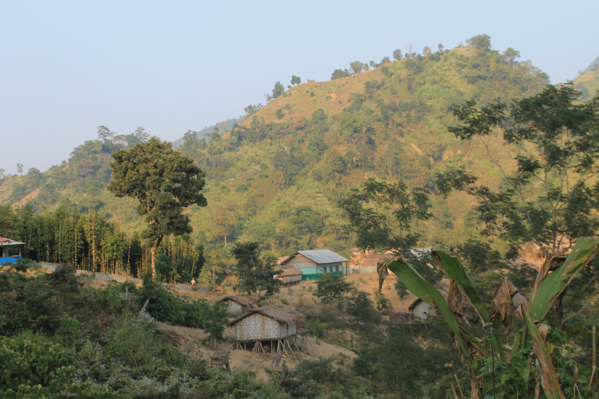

Bridging the gap between Rigorous Engineering & Academic Insight.
Hello, I'm Abdullah Umar Nasib.
A Senior QA Engineer and Researcher dedicated to breaking code to make it stronger.
"
Currently, I co-lead a 25-member team at Therap (BD) Ltd., driving automation at scale while
researching the intersection of NLP and Software Engineering.
7+ Years
Industry Experience in QA, Automation & CI/CD
25 Engineers
Co-leading a high-performance QA Team
VC Medalist
Highest CGPA (3.97) in Master of Engineering
Latest Thought Leadership
My Research & Publications
My research focuses on Natural Language Processing (NLP) and Machine Learning applications in Software Engineering and Software Quality Assurance. All the publications are available at Google Scholar and Research Gate profile. You can contact me in need of any details. Some of the selected publications are as follows:
Academic Background
My Travel Diaries
We travel not to escape life, but for life not to escape us.
Here are some moments captured from my journeys across different landscapes.
"Where dragon myths sleep beneath the ripples. Perched 1,200 feet above sea level, this ancient volcanic lake holds a silence so deep it feels sacred—a hidden sapphire in the heart of the hills."
"A solitary silhouette etched against the fading twilight. High atop the peak, this skeletal guardian witnesses the quiet surrender of day to night, proving that even in decay, there is a haunting, resilient beauty."

"Nestled in the verdant embrace of the hills, life here moves at the rhythm of nature. Perched on bamboo stilts, these traditional homes of the Khumi community offer a glimpse into a serene existence, standing in quiet harmony with the wild, undulating landscape."
About Me
I don't just test software; I dismantle it to build it back stronger.
I am a Vice-Chancellor Medalist and a Senior Software Quality Assurance Engineer with over 7 years of industry experience. Currently, I sit at the intersection of practical engineering and academic research. At Therap (BD) Ltd., I co-lead a 25-member QA team, orchestrating end-to-end automation strategies that keep critical state-contract projects compliant and bug-free.
My career isn't just about finding bugs, it's about architecture and mentorship. From optimizing CI/CD pipelines to mentoring new engineers, I believe quality is a culture, not a phase. When I'm not automating API tests, I'm researching Natural Language Processing (NLP), teaching AI to validate references or detect sarcasm in Reddit texts.
The Professional
My industry work focuses on scalability and reliability. I specialize in building robust automation frameworks that reduce manual effort and accelerate release cycles.
- Leadership: Co-leading 25 QA Engineers
- Automation: API & UI Framework Design
- Strategy: CI/CD Implementation (Jenkins/Docker)
The Strategist
My background in leadership goes back to my university days. Whether directing Human Resources for the Robotics Club or making moves at the Chess Club, I’ve always been driven by strategy and people management.
- Academic: M.Eng in CSE (CGPA 3.97/4.00)
- Mentorship: 5+ years training new recruits
- Interests: Cricket, Chess, Gardening, & Travelling